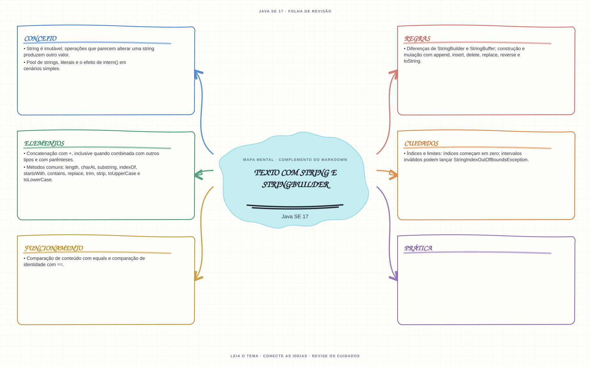

Ver mapa mental deste assuntoDistinguir identidade de referência, igualdade de conteúdo e operações mutáveis ou imutáveis.
Primeiro contato: aprenda o conceito e pratique antes de consultar os detalhes de prova. Voltar aos fundamentos se algum termo ainda for novo.
- Leia o objetivo e localize a ideia principal no conteúdo abaixo.
- Preveja o resultado, compile e execute o exemplo.
- Faça a atividade sem copiar a solução e confira a checagem comentada.
EXEMPLO DE CONSOLE
Veja a regra em execução
Antes de executar, anote sua previsão. Compile o exemplo com o JDK e compare a saída observada com as regras deste assunto.
Comandos para compilar e executar
javac -d target/bin src/01-valores-texto-e-datas/texto-string-e-stringbuilder/TextoStringEStringBuilderExample.java
java -cp target/bin TextoStringEStringBuilderExampleA execução imprime o resultado no console para você comparar com sua previsão.
Consultar código-fonte: TextoStringEStringBuilderExample.java
public class TextoStringEStringBuilderExample {
public static void main(String[] args) {
System.out.println("=== String imutavel e StringBuilder mutavel ===");
String original = "Java";
String novaString = original.concat(" SE 17");
StringBuilder textoMutavel = new StringBuilder("Estudo");
textoMutavel.append(" OCJP");
String textoA = new String("Java");
String textoB = new String("Java");
System.out.println("concat devolve uma nova String: " + novaString);
System.out.println("A String original continua inalterada: " + original);
System.out.println("append altera o StringBuilder: " + textoMutavel);
System.out.println("equals compara conteudo: " + textoA.equals(textoB));
System.out.println("== compara identidade dos objetos: " + (textoA == textoB));
}
}
PRATIQUE AGORA
Faça uma pequena alteração por conta própria
Monte uma frase com StringBuilder, altere uma palavra e compare o resultado com uma concatenação de String.
Concluído quando: o programa compilar, produzir o resultado esperado e você conseguir explicar a regra aplicada.
CHECAGEM RÁPIDA · Texto com String e StringBuilder
Depois de String s = "Java"; s.concat(" 17");, qual é o valor de s?
Conferir resposta comentada
s continua sendo Java: String é imutável e concat devolve uma nova string que precisa ser atribuída.
Estude
Stringé imutável; operações que parecem alterar uma string produzem outro valor.- Concatenação com
+, inclusive quando combinada com outros tipos e com parênteses. - Comparação de conteúdo com
equalse comparação de identidade com==. - Pool de strings, literais e o efeito de
intern()em cenários simples. - Métodos comuns:
length,charAt,substring,indexOf,startsWith,contains,replace,trim,strip,toUpperCaseetoLowerCase. - Diferenças de
StringBuildereStringBuffer; construção e mutação comappend,insert,delete,replace,reverseetoString. - Índices e limites: índices começam em zero; intervalos inválidos podem lançar
StringIndexOutOfBoundsException.
Prática
Preveja o conteúdo final após uma sequência de chamadas encadeadas e diferencie mutação de criação de novos objetos.
Como este capítulo se relaciona com cada exame
Fundamentos reaproveitáveis; valide APIs e objetivos específicos de Java 8.
Base de estudo deste portal; confirme o mapeamento com o blueprint vigente.
Conceitos úteis; confira as APIs e mudanças de linguagem em Java 21.
Orientação editorial sobre reaproveitamento do material; não representa objetivos oficiais nem garante cobertura do exame. Consulte o comparativo e as fontes da Oracle.